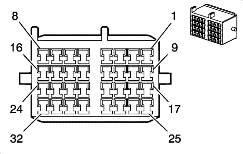

Spark |
||||||||
|
|
|
|||||||
|
 |

|
Información de parte de conector
| Información de parte de conector
|
Información de parte de terminal
| Información de parte de terminal
|
Bulón | Cable | Circuito | Función | Bulón | Cable | Circuito | Función |
|---|---|---|---|---|---|---|---|
1 | 2,5 YE/PU | 5 | Voltaje de arranque (volante a la izquierda) | 1 | 2,5 YE/VT | 5 | Voltaje de arranque (sin LCP) |
0,5 YE/VT | 5 | Voltaje de arranque (volante a la derecha) | 0,5 YE/VT | 5 | Voltaje de arranque (LCP) | ||
2 | 0.35 BN | 25 | Señal del indicador de carga (volante a la izquierda sin BTV o volante a la derecha) | 2 | 0.5 BN | 25 | Señal del indicador de carga |
0.5 BN | 25 | Señal del indicador de carga (volante a la izquierda con BTV) | 0.5 BN | 25 | Señal del indicador de carga | ||
3 | 0,5 PU/D-GN | 39 | Tensión de encendido 1 (volante a la izquierda con MFL o volante a la derecha) | 3 | 0,5 VT/L-GN | 39 | Tensión de encendido 1 (MFL) |
0,5 PU/D-GN | 39 | Tensión de encendido 1 (volante a la izquierda con MFL o volante a la derecha) | |||||
4 | 0,5 PU/BN | 241 | Tensión de encendido 3 | 4 | 0,5 VT/BN | 241 | Tensión de encendido 3 |
5 | 1,5 PU/BK | 339 | Tensión de encendido 1 | 5 | 1.5 VT/BK | 339 | Tensión de encendido 1 (LMT y LCP) |
0,5 VT/BK | 339 | Tensión de encendido 1 (LMU) | |||||
0,5 VT/BK | 339 | Tensión de encendido 1 (LMU) | |||||
6 | 0,5 D-GN | 2386 | Señal alta de vídeo de visión nocturna (MFL) | 6 | 0,5 L-GN | 2386 | Señal alta de vídeo de visión nocturna (MFL) |
0,5 L-GN | 2386 | Señal alta de vídeo de visión nocturna (MFL) | |||||
7 | 0,35 GY/L-GN | 1561 | Control del indicador AWD (MFL) | 7 | 0,5 GY/L-GN | 1561 | Control del indicador AWD (MFL) |
8 | 0,5 YE/BK | 5728 | Línea K de datos serie de transmisión | 8 | 0,5 YE/BK | 5728 | Línea K de datos serie de transmisión |
9 | 0,5 D-GN/WH | 24 | Tensión de alimentación de la lámpara de respaldo | 9 | 0,5 L-GN/WH | 24 | Tensión de alimentación de la lámpara de respaldo |
0,5 D-GN/WH | 24 | Tensión de alimentación de la lámpara de respaldo | 0,5 L-GN/WH | 24 | Tensión de alimentación de la luz de marcha atrás (MFL) | ||
10 | 0,35 D-BU | 135 | Señal del indicador del sensor de ECT | 10 | 0,5 D-BU | 135 | Señal del indicador del sensor de ECT |
11 | 0.35 WH | 121 | Señal de velocidad del motor | 11 | 0.5 WH | 121 | Señal de velocidad del motor |
12 | 0,5 BN/WH | 419 | Control MIL | 12 | 0,5 BN/WH | 419 | Control MIL |
13 | 0,5 BN/YE | 20 | Señal del interruptor de la luz de freno (MFL con FX3) | 13 | 0,5 BN/YE | 20 | Señal del interruptor de la luz de freno |
14 | 0,5 VT/YE | 143 | Tensión accesoria (volante a la izquierda con FX3 ó volante a la derecha) | 14 | 0,5 VT/YE | 143 | Tensión accesoria (LMU) |
15 | 0.5 BN | 17 | Señal del interruptor de la luz de frenado o Tensión de alimentación de la luz de frenado (FX3) | 15 | 0.5 BN | 17 | Señal del interruptor de la luz de freno o tensión de alimentación de la luz de freno (LMU) |
16 | 0,5 BK/VT | 1272 | Referencia baja | 16 | 0,5 BK/VT | 1272 | Referencia baja (LMT o LCP) |
17 | 0,35 L-GN/L-BU | 30 | Señal del sensor del nivel de combustible | 17 | 0,5 L-GN/D-BU | 30 | Señal del sensor del nivel de combustible |
18 | 0.35 YE | 1127 | Datos serie de clase 2 del ordenador de abordo/Nav. | 18 | 0.5 YE | 1127 | Datos serie de clase 2 del ordenador de abordo/Nav. |
19 | 0,5 D-GN/WH | 488 | Señal de interruptor activado de la PTO (BAE y BAH) | 19 | 0,5 VT/BN | 1319 | Línea K de datos serie del motor/radio |
0,5 PU/BN | 1319 | Línea K de datos serie del motor/radio (sin BAE) | |||||
20 | -- | -- | No se utiliza | 20 | -- | -- | No se utiliza |
21 | 0,5 BK/D-BU | 1271 | Referencia baja | 21 | 0,5 BK/D-BU | 1271 | Referencia baja (LMT o LCP) |
22 | 0,5 YE/WH | 1161 | Señal 1 del sensor APP | 22 | 0,5 YE/WH | 1161 | Señal del sensor 1 APP (LMT o LCP) |
23 | 0,5 WH/RD | 1164 | Referencia de 5 voltios | 23 | 0,5 WH/RD | 1164 | Referencia de 5 voltios (LMT o LCP) |
24 | 0,5 D-GN/WH | 1162 | Señal 2 del sensor APP | 24 | 0,5 D-GN/WH | 1162 | Señal del sensor 2 APP (LMT o LCP) |
25 | 0.5 GY | 31 | Control del indicador de presión del aceite | 25 | 0.5 GY | 31 | Control del indicador de presión del aceite |
0.5 GY | 31 | Control del indicador de presión del aceite | |||||
0.5 GY | 31 | Control del indicador de presión del aceite | |||||
26 | 0.5 YE | 718 | Referencia baja | 26 | 0,5 BK/GY | 581 | Control 1 del motor TAC |
27 | 0.5 WH/L-BU | 732 | Señal del sensor de alta temperatura del refrigerante del A/A | 27 | 0,5 WH/D-BU | 732 | Señal del sensor de alta temperatura del refrigerante del A/A |
28 | 0.5 YE | 400 | Señal alta del VSS | 28 | 0.5 YE | 400 | Señal alta del VSS |
0.5 YE | 400 | Señal alta del VSS (UZM con C68) | 0.5 YE | 400 | Señal alta del VSS (LMU con MFM) | ||
29 | 0,5 BN/RD | 1274 | Referencia de 5 voltios (LMT o LCP) | 29 | 0,5 BN/RD | 1274 | Referencia de 5 voltios (LMT o LCP) |
30 | 0,5 D-GN/BN | 507 | Espere al control del indicador de arranque (volante a la izquierda con LCP) | 30 | 0,5 D-GN/BN | 507 | Espere al control del indicador de arranque (LCP) |
31 | 0,5 BN/WH | 6219 | Control del indicador del precalentador (volante a la izquierda con LCP) | 31 | 0,5 BN/WH | 6219 | Control del indicador del precalentador (LCP) |
32 | 1 VT/BK | 1846 | Tensión de alimentación de la bobina del encendido (volante a la izquierda con LCP) | 32 | 1 VT/BK | 1846 | Tensión de alimentación de la bobina del encendido (LCP) |
1 VT/BK | 1846 | Tensión de alimentación de la bobina del encendido (volante a la izquierda con LCP) |
| © Copyright Chevrolet. Reservados todos los derechos |